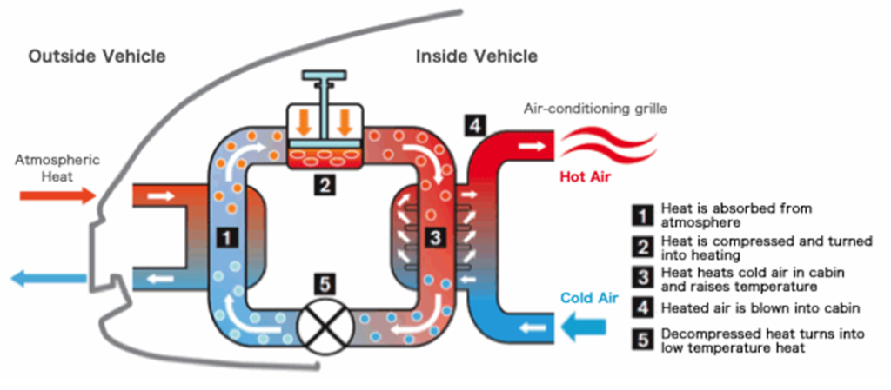
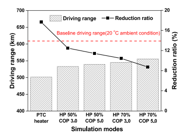
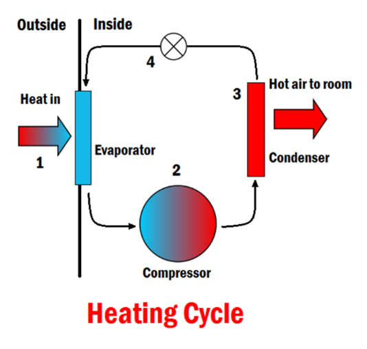

This article will discuss what a Heat Pump is and how it’s used to heat an electric vehicle. But before all that, gas powered automobiles spurred American consumerism and the National Interstate and Defense Highways Act (1956). These petrol peddlers have begun to be phased out as customers sample the fruits of green transportation. The electric vehicle (EV) Tesla Model Y is the natural progression to the gas powered (ICE) Ford Model T. Incentives ranging from the $7,500 tax credit to the Heat Pump will increase EV user adoption, “so that the great American road trip can be electrified.” (Gov.)
“The heat pump is like an air conditioner but in reverse. An air conditioning system takes heat out of your house and pumps it to the hotter outside environment. While the heat pump harvests heat when it’s cold outside and pushes it into the cabin of the car.” (Tesla.) The propriety technology of the heat pump is depicted in Figure 1, Label 2: a piston compresses air to a desired heat and releases it into the car[1]. This method is three times more efficient compared to the prior process of generating hot air by heating metal coils and blowing air over them.
Figure1: Diagram of a Nissan Leaf heat pump. | Image source: Nissan
“A car with a heat pump does much better when it drops down to freezing than one without,” (Scott Case, CEO Recurrent) whereupon frigid temperatures result in sluggish battery operation. Take for example Tesla who was recently fined 2.2 million by South Korean authorities for failing to disclose range drops in cold temperatures. Why is this the case?
First, “Cars are like humans,” said Anna Stefanopoulou, a professor of mechanical engineering at the University of Michigan. “They like room temperature”. Just like being warmed up to workout, batteries perform optimally when preconditioned and their juices are flowing. Second, the human occupant sitting inside wants to be warm. This poses no problem for an ICE which funnels waste heat from the engine back into the cabin, but an EV must make hot air for the sole intent. When it comes to cold, EV range is a fickle thing because it must consume precious energy to keep her components warm. After successful iterations of vehicular technologies, the heat pump has been popularized to negate this energy seeping threat.
In a study done by Hoseong Lee, a professor of mechanical engineering at Korea University, two heating process were compared for their respective battery usage. As seen in the graph below, the first was an electric heater (PTC) whose “estimated driving range was 501.43 km.” The second was a heat pump (HP) whose “estimated driving range was 555.89 km.”, resulting in a 10.86% improvement in driving range. The HP is worth its weight in cold compared to a PTC.
Figure 2: Graph of driving range of heat pump for EVs under cold ambient conditions. | Image source: Elsevier
Figure 3: The process and parts involved in a heating cycle. | Image source: Energy EDU.
EV’s battery components and drivetrain generate a certain amount of waste heat. While a PTC neglects this useful energy and pumps it back into the atmosphere, a HP harnesses this heat and pumps it back into the cabin. Refrigerants flow through the cooling system of the car and pickup waste heat along the way. In figure 3, label 3, this hot liquid turns into a gas and flows through condenser coils. “Since it is at a higher temperature than the cabin, it transfers heat to the room and condenses back into a liquid.” (Energy EDU.) When it is too cold outside, this refrigerant is manually compressed, to generate heat and warm the car.
The reason a heat pump is so efficient is because it moves heat from a high-temperature area to a low-temperature area, which requires less energy than creating heat from scratch. This makes for a closed energy system and battery must work less hard to generate the same amount of heat.
Elon Musk wrote on twitter, “Model Y heat pump is some of the best engineering I’ve seen in a while. Team did next-level work.” The vehicle’s heat pump performed exceedingly well in frigid temperatures and delivered "excellent efficiency." The heat pump also reduces the car’s complexity and thus cost. For example, the pre-heat pump 2018 Model 3 had a “31 percent gross profit margin” (Sandy Live.) while the post-heat pump 2022 Model Y has a “33 percent gross margin”. Redistributing heat from the powertrain, the heat pump makes for an EV that can thrive outside its natural habitat of California, ready for mass adoption.
(ICE) Internal Combustion Engine Vehicle: An engine that generates motive power by burning gasoline to produce hot gases used to drive a piston as they expand.
(EV) Electric Vehicle: An automotive that harnesses lithium-ion batteries for propulsion.
(COP) Coefficient of Performance: The ratio of heat delivered versus input power.
(PTC) Conventional positive temperature coefficient: A wire electric heater.
[1] Compressed air makes heat and uncompressing air makes cold.